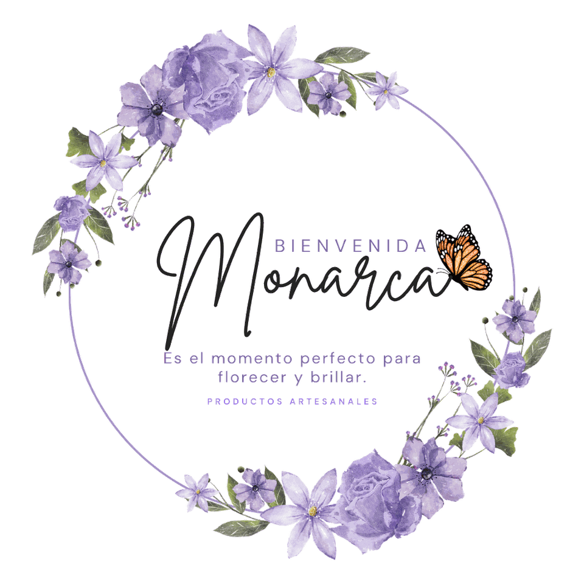
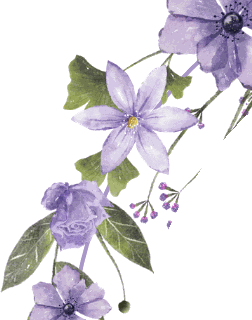

Monarca
Es el momento perfecto para florecer y brillar.
Tónicos, perfumes y aceites hechos a mano, en lotes pequeños.
Ver el catálogoHecho a mano
Catálogo

La artesana
«Preparo cada producto a mano, en lotes pequeños, con plantas que conozco.»
Soy Sandra Santamaría. Las recetas las he ido afinando con los años, y cada lote sale de mi propia cocina.
Será un placer asesorarte y ayudarte a elegir lo que mejor te sirva.
De dónde sale
Nuestros ingredientes
Cada preparación parte de plantas escogidas por su aroma y su tradición de uso.
- Manzanilla De aroma suave y familiar, tradicionalmente asociada a la calma.
- Caléndula Clásica en la cosmética artesanal, de tono cálido y dorado.
- Lavanda Aroma envolvente que acompaña los momentos de descanso.
- Romero Herbal y fresco, muy usado en preparaciones para el cabello.
- Rosa Delicada y floral, la base de nuestra agua de rosas.
- Ciprés Verde y resinoso, de carácter sereno.
- Ylang-ylang Floral e intenso, muy presente en perfumería.
- Cedro Amaderado y cálido, de fondo profundo.
Antes de pedir
Preguntas frecuentes
¿Cómo hago un pedido?
Elige el producto y toca «Pedir por WhatsApp». Se abre un mensaje ya escrito con el producto que te interesa; sólo tienes que enviarlo.
¿Cómo se conservan los productos?
En un lugar fresco y fuera del sol directo. Al ser preparaciones artesanales sin conservantes fuertes, se aprovechan mejor en los meses siguientes a su compra.
¿Puedo pedir varios productos?
Sí. Escríbenos por WhatsApp y armamos el pedido completo contigo.